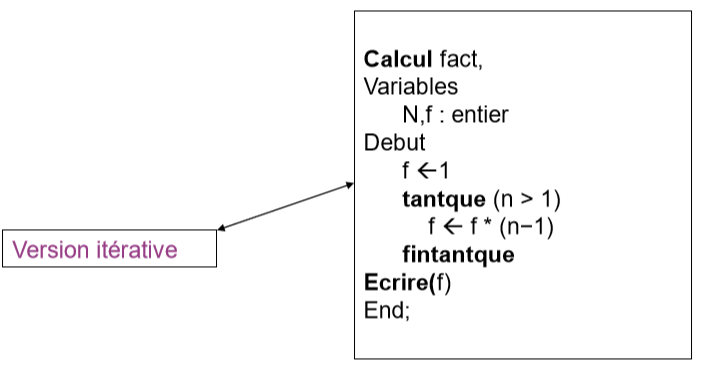

● Les procédures et fonctions permettent d'isoler des instructions dans un sousprogramme interne au programme principal.
● Les Avantages
La complexité: Lorsque l'algorithme est complexe, il est préférable d'organiser les instructions au sein de procédures ou fonctions afin de faciliter la logique globale du programme.
La réutilisabilité: Lorsqu'une séquence d'instructions est répétée plus d'une fois dans un programme, on peut la regrouper dans une procédure ou fonction.
Les procédures
● Une procédure est une suite d'instructions servant à réaliser une tâche précise en fonction d'un certain nombre de paramètres (arguments).
Déclaration
● Dans le pseudo-langage, une procédure se déclare de la manière suivante:
● Pour utiliser (ou appeler) la procédure dans un programme appelant, on écrit: Nom_de_la_procédure ( variable1, variable2, variable3, variable4, ...)
● A chaque paramètre on associe un nom de variable connue dans le programme appelant ou bien une valeur
Remarque:
Les variables que l'on déclare localement à la procédure ne sont connues que dans cette procédure.
Remarque:
Le nombre de paramètres dans l'appel d'une procédure doit correspondre au nombre de paramètres de la procédure lors de sa définition.
Le type du kième paramètres dans l'appel d'une procédure doit correspondre au type du kième paramètre de la procédure lors de sa définition.
Passage par valeur
● Lorsque nous souhaitons que la valeur d'une variable du programme appelant ne soit pas modifiée, elle devra alors être passée par valeur.
● La procédure ou la fonction qui la manipule recevra cette valeur en entrée du programme mais il s'agira de la copie en mémoire de la valeur de la variable d'origine.
● Dans notre pseudo, le passage par valeur est indiqué par le mot clé val.
Passage par référence
● Lorsque nous utilisons le passage d'une valeur par référence, nous indiquons non sa valeur mais la référence en mémoire de celle-ci. Ainsi, la procédure ou fonction manipule donc le même espace de mémoire.
● Toute modification apportée à la variable manipulée par la fonction ou procédure touchera donc la variable d'origine.
● Attention donc au choix effectué lors de la transmission des paramètres à une procédure!
● Dans notre pseudo, le passage par référence est indiqué par le mot clé var.
● Une fonction est une procédure dont le but est de déterminer une valeur et de la retourner au programme appelant.
● Dans le pseudo-langage, elle se déclare de la manière suivante:
type FONCTIONnom_de_la_fonction ( typenom, typenom, ...)
Déclarations de variables locales
Début
actions
Retourne valeur
Fin
● Les mêmes remarques que pour la procédure s'appliquent.
● De plus, il faut noter que la fonction retourne une valeur et que donc à la déclaration on doit indiquer son type, c'est à dire le type de cette valeur.
● Une fonction ne retourne jamais un tableau.
● Pour utiliser une fonction dans un programme appelant, on l'appelle de la façon suivante:
● Exemple: Ecrire une fonction qui retourne la somme de deux entiers.
Algorithme add_func entier FONCTION somme (entier a, entier b) VariablesTableau S : entier Début
S ← a + b
Retourne S
Fin
Variables i, j, k : entier Début
Ecrire("Entrez un nombre:")
Lire(i)
Ecrire("Entrez un nombre:")
Lire(j)
k ← somme(i, j)
Ecrire("la somme est ", k)
Fin
La Récursivité
● Définition: Un algorithme est dit récursif lorsqu'il est défini en fonction de lui même.
● Récursivité simple: La fonction puissance x → xn. Cette fonction peut être définie récursivement:
Itération et Récursivité
● Exemple: Calcul de factoriel

● Un module (fonction ou procédure) peut s'appeler lui même: on dit que c'est un module récursif.
● Tout module récursif doit posséder un cas limite (cas trivial) qui arrête la récursivité.
● Liste des appels de la fonction factoriel (cas du n=4).
● Une fonction est définie récursivement lorsque la valeur de la fonction en un point x est définie par rapport à sa valeur en un point strictement "plus petit".
De ce fait, le calcul se fait de proche en proche, jusqu'à atteindre le plus petit élément pour lequel il faut une valeur immédiate (c'est-à-dire non récursive).
Le corps d'une fonction récursive doit toujours exprimer un choix, soit par une expression conditionnelle, soit par une définition par cas.
Au moins un cas terminal rend une valeur qui n'utilise pas la fonction définie.